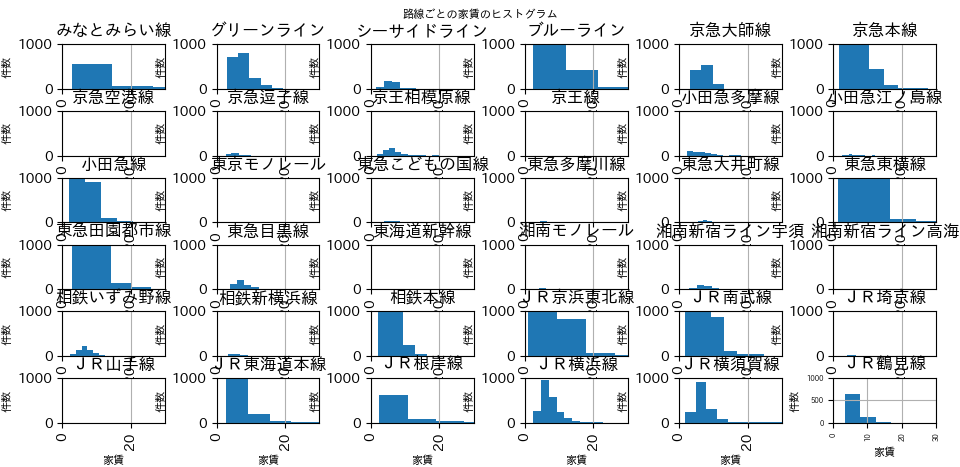

データ分析
課題：おすすめエリアの紹介を使用
自分だったらどこに住みたいかという観点からおすすめエリアを決定していきます。
データから得られる情報とは？
今回データから得られるのは以下の物件についての情報です。
- 物件の名称
- 物件のカテゴリ(賃貸アパート、賃貸マンションetc...)
- 住所
- アクセス
- 最寄り路線
- 最寄り駅orバス停
- 乗換にかかる時間
- バスにかかる時間
- 徒歩にかかる時間
- 車にかかる時間
- 通学合計時間
- 物件の築年数
- 物件の構造
- 物件が何階建てであるか
- 家賃
- 物件の管理費
- 敷金
- 礼金
- 間取り
- 面積
この情報の中からいくつかに条件を課し、おすすめエリアの決定を試みます
補足
個人的に聞いたことはあるけれどよく知らない単語、知っているけれど詳しくない単語が情報カテゴリの中に見られたのでここにまとめておきます。
築年数・・・築年数というのはどのくらいの年数だとどのくらい古いのか、居心地にかかわってくるのかを知らない
このサイトを参考に、築20~30年のモノを今回は狙います。
構造・・・情報一覧に乗っている数字が何を表すのかわからない
家賃・・・自分は実家暮らしなので家賃や光熱費、食費が学生一人だとどのくらい圧迫感があるのかを知らない
今回はひとまずなるべく安くを目標にします。
物件の管理費・・・純粋になんことか全くわからない
このサイトを参考に、家賃と同じくなるべく安さを追求したいと考えます.
☆面積に応じて高額になる傾向にある
敷金、礼金・・・聞いたことしかない
このサイトを参考に、これまたなるべく安くを狙いたいと思います。
家賃
自分だったら家賃よりも自分の好きなことにお金を使いたいので、家賃はなるべく抑えたいと考えます。
仮にいざ本当に物件探しということになったら家賃重視で考えて後は内観等で絞ると思います
よってなるべく家賃の安い傾向にある場所を調べます。

このヒストグラムから物件数が多く、かつ家賃が安い傾向にある路線を探すと
みなとみらい線、グリーンライン、ブルーライン、京急本線、小田急線、東急東横線、東急田園都市線、相鉄本線、
JR京浜東北線、JR南武線、JR東海道本線、JR根岸線、JR横浜線、JR横須賀線、JR鶴見線のいずれかになる。

.png)
.png)
.png)